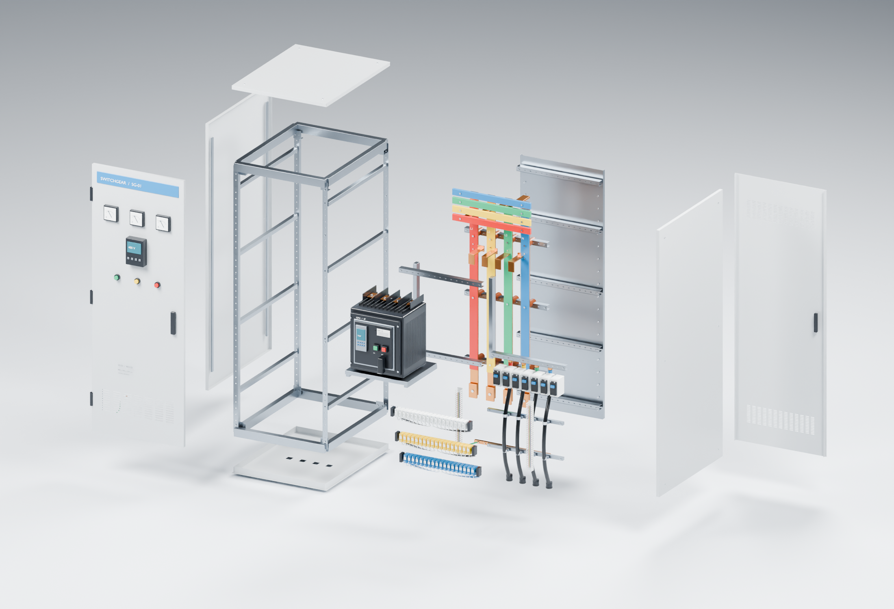

SWITCHGEAR / 3D EXPLORER
爆炸分解

正在加载交互模型
首次打开需下载约 23 MB，请稍候。
拖动旋转 · 滚轮或双指缩放
01 / 电源就绪
上游母排带电，断路器分闸。
上游 400 V · 带电下游未供电
主回路拓扑为讲解假设 · 内部通路为示意叠加
SG-01 / 运行逻辑版 V3 · 模拟数据

首次打开需下载约 23 MB，请稍候。
上游母排带电，断路器分闸。